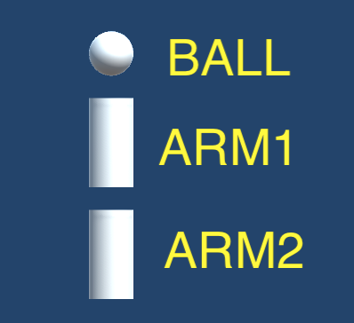
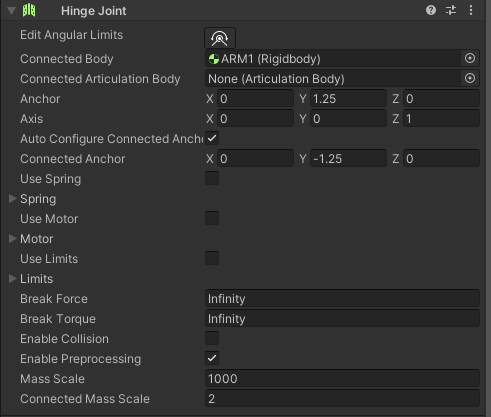
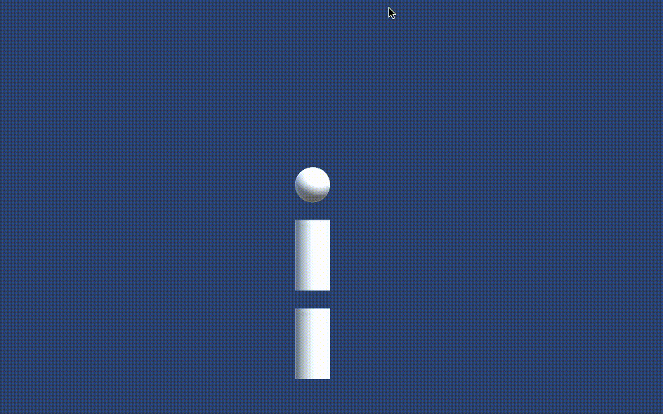

A. デフォルトだと実行ボタンを押す度に Unity エディタがいちいち初期化処理を行うため実行開始するまで結構時間がかかる。
初期化処理を無効化するには Edit → Project Settings → Editor → Enter Play Mode Settings の Enter Play Mode Options にチェックを入れる。
すると変数の初期化やシーンの初期化をしなくなるので実行開始が早くなる。
※ この設定を有効にしたのを忘れたまま開発を進めると変なバグが入るので、たまに無効にして実行してみると良いです。
A. シーンビューを開いて視点を調整 → ヒエラルキーのカメラを右クリック → Align With View を選択
A. 以下の様に Vector3 To String ユニットを間に挟む
桁数を変えたい時はFの後の数字を変更する

A. 「異方性フィルタリング(Anisotropic filtering: アニソトロピックフィルタリング)」がきちんと設定されているか確認する。
例えば道路を作ろうと思って Plane にこのテキスチャを貼り付けたたら下の様に奥側の模様が変になったとする。

この場合まずはテクスチャのインスペクタを開き、Filter Mode の項目を確認する。
もし Filter Mode が 「Point(no filter)」になっていたら下の様に「Bilinear」または「Trilinear」にする(Trilinearの方が綺麗になるが計算の負荷が大きくなる)
すると下の様に奥側の模様も綺麗になる。
それでも綺麗にならない場合は Filter Mode の下にある Aniso Level の数値を上げる(ただし数値が大きいほど負荷が大きくなる)
A. ジョイントで結合しているオブジェクトの質量に極端な差があると関節が伸びる。
関節が伸びないようにするするためにはヒンジジョイントのインスペクタにある「Mass Scale」と「Connected Mass Scale」に適切な値をセットする。
するとヒンジジョイントがアタッチされているオブジェクトの質量が 1/(Mass Scale) 倍、ヒンジジョイントが接続されているオブジェクトの質量が 1/(Connected Mass Scale) 倍されて物理演算されるようになるので質量の差が補正される。
例えば下の様な腕を考える。
ARM1 の重さを 2 kg、ARM2 の重さを 1000 kg として ARM1 と ARM 2 をヒンジジョイントで繋ぎ(ARM2にヒンジジョイントをアタッチ、ちなみにBALLとARM1は固定ジョイント)、BALLを中心にして回転させると次の画像の様に関節が伸びる。
そこで ARM2 にアタッチされているヒンジジョイントのインスペクタを開き Mass Scale = 1000、Connected Mass Scale = 2 と入れる(下の図)。
すると ARM2 は 1000/1000 = 1 kg、 ARM1 は 2/2 = 1 kg に換算されて物理演算されるので下の画像の様に関節が伸びないようになる。
{kind=link}